Sebesség
A sebesség nem más mint időegyseég alatt megtett távolság.
Ha 1 m/s a sebesség akkor a tömegpont 1 sec alatt 1 métert tesz meg.
Képlet: v = s
ㅤㅤㅤㅤㅤt
v = sebesség (m/s)
s = távolság (m)
t = idő (s)
1 m/s = 3,6 km/h
Gyorsulás
A gyorsulás nem más, mint időegység alatti sebességváltozás.
Képlet: a = v
ㅤㅤㅤㅤㅤt
a = gyorsulás (m/s2)
v = sebesség (m/s)
t = idő (s)
Szabadesés
A levegő ellenállása miatt igazán csak légüres térben lehetséges. (Newton cső)
A szabadesés egyenletesen gyorsuló mozgás.
A szabadon eső testnek másodpercenként 10 m/s-mal nő a sebesége.
Képlet: v = g * t
ㅤ ㅤㅤs = 0,5 * g * t2
v = sebesség (m/s)
g = nehézségi gyorsulás(gravitáció) (m/s2)
t = idő (s)
s = távolság (m)
Testek súlya
A tömeg sehol nem változik, csak a súly.
Minden testet a föld egy bizinyos erővel vonz.
Ezt az erőt nehézségi erőnek nevezzük, amelynek nagysága megegyezik a test súlyával.
Jele: G
Képlet: G = m * g
Mértékegység: N
Mechanikai munka
Fizikai értelemben akkor beszélünk munkavégzésről, ha egy test erő hatására elmozdul.
Jele: W
Képlet: W = F * s
Mértékegység: J
Teljesítmény
A munkavégzés soránm fontos, hogy mennyi ideig tart a munkavégzés.
A teljesítmény nem más mint időegység alatti munkavégzés.
Jele: P
Képlet: P = W/t
Mértékegység: Watt
Helyzeti energia
Ha egy m tömegű testet h magasságba felemelünk, akkor annak a testnek helyzeti energiája lesz.
Jele: E helyzeti vagy E potenciális
Képlet: E = m * g * h
Mértékegység: J
Mozgási energia
A mozgási enmergia függ a test tömegétől és a sebességétől.
Jele: E mozgási vagy E kinetikus
Képlet: E = 0,5 * m * v2
Mértékegység: J
Newton gravitációs törvénye
A gravitációs erő egyenesen arányos a két test tömegének szorzatával
és fordítva arányos a köztük lévő távolság négyzetével.
Ez a képlet azt jelenti, hogy minden test vonza
egymást egyenlő nagyságú de ellentétes irányű erővel.
Kappa: gravitációs állandó: 6,67 * 10-11
ㅤㅤㅤㅤa világegyetemben ez az érték mindenhol ugyanaz.
Jele: F gravitációs
Képlet: F = Κ * (m1 * m2)/r2
Mértékegység: N
Impulzus
Az impulzus a tömeg és a sebesség szorzata.
Newton az F = m * a-t az impulzusból vezette le.
Jele: p
Képlet: p = m * v
ㅤㅤㅤF = p/t = (m * v)/t = m * a
Mértékegység: kgm/s
Forgatónyomaték
Az erő és az erőkar szorzata.
Jele: M
Képlet: M = F * r
Mértékegység: Nm
Hőmérséklet mérése
A hőmérséklet mérése hőmérővel történik.
A fizikában higanyhőmérőt használnak.
Ha a hőmérőt melegítjük a higany térfogata tágul és a higany a csőben tágul.
A nálunk használatos hőmérőnek két alappontja van.
A 0°C az olvadó jég hőmérséklete, a 100°C a forrásban lévő víz hőmérséklete.
A celsius skálát egy svéd csillagászról nevezték el: Anders Celsius (1701-1744)
Jele: T
Mértékegység: °C vagy K
A világegyetemben előforduló hőmérséklet a -273,15°C
Azért nincs hidegebb, mert a részecskék nem mozognak, ezért nem termelődik belső energia.
-273,15°C = 0K
A K a Kelvinfokot jelenti. A K negatív nem lehet.
Test belső energiája
Minden test részecskéből épül fel (szilárd, folyékony, gáz).
Ezek a részecskék állandóan rezegnek vagy mozognak.
Ha a testeket melegítik a részecskék felgyorsulnak,
mozgásuk megélénkül és ilyen esetben a test belső energiája nő.
Abban az esetben ha a test hőmérséklete csökken,
akkor a test belső energiája is csökken.
A test belső energiája 0 sosem lehet.
Mértékegység: J
Hővezetők és hőszigetelők
A hővezetés a szilárd anyagoknál fordul elő.
Hővezetők: réz, alumínium, vas
Félvezetők: kő, üveg, cserép, porcelán
Hőszigetelők: gyapjú, toll, hungarocel, fa, fűrészpor, jég
Egy hótakaró védőhatása akkora, mint egy ugyanolyan vastag téglafalé.
Hőáramlás
A hőáramlás folyadékoknál és gázoknál jöhet létre.
Ha a folyadékokat vagy gázokat melegítjük, akkor a térfogatuk megnő,
sűrűségük csökken. Aminek kissebb a sűrűsége mindig feláramlik
és helyére hideg kerül. Ezt nevezik hőáramlásnak.
Folyadékokra példa a radiátorokban a víz.
Gáznál a léggömb.
Jele: görög delta
Képlet: ρ = m/V
Hősugárzás
Hideg téli napokon is érezzük a napnak a sugarát annak ellenére,
hogy a környezetet nem melegíti fel.
Ezt nevezzük hősugárzásnak.
Hőmennyiség
A belső energiaváltozást hőmennyiségnek nevezzük.
Jele: Q
Képlet: Q = m * c * ΔT
Mértékegység: J
Ha a test hőmérséklete nő pl.: melegítés, akkor a belső energiája is nő.
Ha a test hőmérséklete csökken pl.: hűtés, akkor a belső energiája is csökken.
Fajhő
A fajhő megmutatja, hogy 1kg anyag 1°C-al való melegítésekor
vagy hűtésekor mennyivel növekszik vagy csökken a test belső energiája.
Pl.: A víz fajhője 4200 J/kg°C vagy 4,2 kJ/kg°C
1kg víz (csak víznél 1l) 1°C-al való melegítésekor
a víz belső energiája 4200 J-lal nő.
1kg víz (csak víznél 1l) 1°C-al való hűtésekor
a víz belső energiája 4200 J-lal csökken.
Jele: c
Képlet: Q = m * c * ΔT
ㅤㅤㅤt = (m1*c1*t1 + m2*c2*t2) / (m1*c1 + m2*c2)
Mértékegység: J/kg°C vagy kJ/kg°C
ㅤ-Jég fajhője:ㅤ2100 J/kg°C
ㅤ-Vízgőz:ㅤㅤㅤㅤ2000 J/kg°C
ㅤ-Alumínium:ㅤㅤㅤ880 J/kg°C
ㅤ-Acél:ㅤㅤㅤㅤㅤㅤ460 J/kg°C
ㅤ-Réz:ㅤㅤㅤㅤㅤㅤ400 J/kg°C
Szilárd testek hőtágulása
Melegítés hatására a szilárd anyagok megnyúlnak pl.: vasúti sínek.
Ilyen hosszúságváltozásokat figyelembe vesznek hidak építésekor is.
A híd egyik végét rögzítik, a másik vége görgőkön nyukszik.
Különféle anyagok különböző mértékben tágulnak melegedéskor.
Ha 1m hosszú rudat 0°C-ról 100°C-ra melegítjük, akkor
ㅤ-réznél:ㅤㅤ1,7 mm-rel nőne
ㅤ-vasnál:ㅤㅤ1,1 mm-rel nőne
ㅤ-betonnál:ㅤ1,1 mm-rel nőne
Ha egy rudat melegítünk, akkor a következő képlettel számolható ki a hosszúságváltozás
Jele: l
Képlet: lt = lo(1+α*T)
Mértékegység: m
Folyadékok hőtágulása
Melegítés hatására a folyadékok térfogata megnő. Különböző anyagok különböző
képpen tágulnak. 1l(1000cm2) folyadék hőmérséklete ha 10°C-kal nő, akkor:
Jele: V
Képlet: Vt = Vo(1+β*ΔT)
Mértékegység: l
ㅤ-Alkohol:ㅤㅤ11 cm2-rel nő
ㅤ-Petróleum:ㅤ10 cm2-rel nő
ㅤ-Higany:ㅤㅤㅤ1,8 cm2-rel nő
ㅤ-Víz:ㅤㅤㅤㅤ0,6 cm2-rel nő
Gázok hőtágulása
Melegítés hatására agázok kitágulnak, viszont egyformán és egyenletesen.
Ez azt jelenti, hogy a gázok hőtágulása független a gázok fajtájától.
Hatásfok
A hatásfok megmutatja, hogy a hasznos energiaváltozás a befektetett energiának hányad
része, amit mindig százalékban fejeznek ki. A hatásfok mindig kisebb egynél,
vagyis 100%-nál. Ez azt jelenti, hogy a befektetett energia 70%-a hasznos, 30% meg a veszteség.
Négyütemű benzinmotor hatásfoka kb. 30%, a dízelmotorok hatásfoka kb. 40%.
Jele: üpszilon
Képlet: Υ = (hasznos energia)/(befektetett energia)
Mértékegység: J
Halmazállapot változások
Három féle halmazállapotot fogunk vizsgálni:
ㅤ-szilárd
ㅤ-cseppfolyós
ㅤ-légnemű
A jég, a víz és a vízgőz ugyanaz az anyag csak
más halmazállapotban fordulnak elő.
Szó lesz még a párolgásról és a szublimációról.
Folyadékok hűtésekor fagyás következik be, ilyenkor
a folyadékok megszilárdulnak.
Melegítéskor a szilárd anyag folyadékka válik, ezt
nevezzük olvadásnak.
A folyadékoka felszínükön állandóan párolognak.
Ilyenkor a folyadékoból légnemű anyag lesz.
A folyadékok adott hőmérsékleten forrani kezdenek.
Ilyenkor a folyadék belselyében megindul a buborékképződés.
Légnemű anyagok hűtéskor folyékonnyá válnak. Ez a lecsapódás.
Egyes szilárd anyagokazonnal légneművé válnak. Pl a naftin.
Ezt szublimációnak nevezzük. Fordítottja a dér kialakulása.
Olvadás
Az olvadás szilárd anyagoknál meghatározott hőmérsékleten történik,
amely anyagonként változik. Ezt nevezzük az anyag olvadáspontjának.
ㅤ-Aluimínium:ㅤ660°C
ㅤ-Ezüst:ㅤㅤㅤㅤ960°C
ㅤ-Higany:ㅤㅤㅤ-68°C
ㅤ-Naftin:ㅤㅤㅤㅤ80°C
ㅤ-Cukor:ㅤㅤㅤㅤ160°C
ㅤ-Vas:ㅤㅤㅤㅤㅤ1535°C
ㅤ-Jég:ㅤㅤㅤㅤㅤㅤ0°C
Az a mennyiség amely megmutatja, hogy 1kg tömegű anyag megolvadáskor
mennyivel nő a belső energiája, olvadáshőnek nevezzük.
Jele: Lo
Képlet: ΔE = Lo * m
Mértékegység: J/kg
ㅤ-Alumínium:ㅤ390 000 J/kg
ㅤ-Arany:ㅤㅤㅤ65 000 J/kg
ㅤ-Cukor:ㅤㅤㅤ60 000 J/kg
ㅤ-Jég:ㅤㅤㅤㅤ340 000 J/kg
A jég olvadáshőkje azt jelenti, hogy 1kg jég megolvadásához 340 000 J/kg
energia szükséges.
Fagyás
A fagyás cseppfolyós anyagoknál meghatározott hőmérsékleten történik.
Ez anyagonként különböző. Ez az anyag fagypontja. Ugyanazon anyag
fagyás és olvadáspontja megegyezik. Az a mennyiség amely megmutatja,
hogy 1kg anyag megfagyásakor mennyivel csökken a test belső energiája,
fagyáshőnek nevezzük. Ügyanazon anyag olvadás és fagyáshője megegyezik.
Jele: Lo
Képlet: ΔE = Lo * m
Mértékegység: J/kg
Fagyáskor a test térfogata csökken, sűrűsége nő.
! Viszont a víz kivétel. Ezt nevezzük a víz anomáliájának. !
Télen a vízcsövekben fagyáskor a jég térfogata megnő, ez szétrepeszti a
csöveket.
Fagyáskor a jég sűrűsége csökken. Ezért úszik a jég a vizen.
Forrás
Az a hőmérséklet amelyen a folyadék forrni kezd, forrráspontnak nevezzük.
Forráskor a felszínen és a folyadék belselyében is megindul a ggőzképzés.
Különböző anyagok forráspontja különböző. Forráspontot elérve a folyadék
hőmérséklete nem emelkedik tovább.
Néhány anyag forráspontja:
ㅤ-Víz:ㅤㅤㅤ100°C
ㅤ-Aceton:ㅤㅤ56°C
ㅤ-Higany:ㅤㅤ356°C
ㅤ-Kénsav:ㅤㅤ337°C
Az a mennyiség amely megmutatja, hogy 1kg tömegű anyag elforrásakor
mennyivel nő a belső energia, forráshőnek nevezzük.
Jele: Lf
Képlet: ΔE = Lf * m
Mértékegység: J/kg
Néhány anyag forráshője:
ㅤ-Víz:ㅤㅤㅤ2260 kJ/kg
ㅤ-Aceton:ㅤㅤ124 kJ/kg
ㅤ-Higany:ㅤㅤ287 kJ/kg
ㅤ-Kénsav:ㅤㅤ553 kJ/kg
Egy folyadék forráspontja mindig függ a nyomástól. Ahol nagyobb a nyomás,
nagyobb a forráspont. Pl a kuktában nagyobb a nyomás mint a külső és 100°C
felett forr a víz.
Kis nyomáson pl hegyekben 100°C alatt forr a víz.
Párolgás
Minden folyadék, minden hőmérsékleten párolog. Párolgáskor a részecskék
hagyják el a folyadékot. Ezért a megmaradt folyadék belső energiája csökken.
(Nyáron ha kijössz a medencéből bármennyire süt a nap fázni fogsz.)
Párolgáskor a folyékony halmazállapotból légnemű halmazállapot lesz.
A párolgás sebessége 4 dologtól függ:
ㅤ-anyag fajtájától (alkohol gyorsabban párolog mint a víz)
ㅤ-párolgó felület nagyságától (teregetés)
ㅤ-hőmérséklettől (nyáron előbb szárad)
ㅤ-környezet páratartalmától
Lecsapódás
Főzéskor a konyhaablak bepárásodik, fürdéskor a levegőben lévő vízgőz a
hideg csempén lecsapódik, folyadékká válik.
A lecsapódás a párolgás fordítottja.
A lecsapódott vízgőz belső energiája csökken.
A lecsapódás játszik szerepet a felhőképződésben is:
ㅤㅤA földön található víz párolog és a magasban ahol hideg van lecsapódik
ㅤㅤés vízcseppekké áll össze, a vízcseppekből felhő lesz. Egy felhő minél
ㅤㅤszürkébb, annál valószínűbb hogy esni fog.
Köd
A köd a föld felszínén kialakult felhő. A köd a levegő lehűlésekor jön
létre. Ilyenkor a látótávolság 1km alá csökken. Ha 1km-nél messzebb
ellátunk, akkor azt mondjuk, hogy a levegő párás.
Talajmenti csapadék
A talajmenti csapadék is lehűléssel alakul ki, amikor a földfelszín hűl le,
akkor alakul ki a harmat, a dér és a zúzmara.
Harmatpont
Amikor egy köbméter levegőben annyi vízgőz van, hogy többet nem képes befogadni,
akkor azt mondják, hogy a levegő telített.
Ezt a hőmérsékleti értéket harmatpontnak nevezzük.
Légnedvesség páratartalom
A légkörben vízgőz található, amely anedvességet okozza.
Tökéletesen száraz, vízgőzt nem tartalmazó helyek a sivatagok, itt a nedvesség 0%.
Ha a vízzel a levegő teljesen telítve van, akkor a légnedvesség 100% mint az esőerdők.
Zárt helységekben az a legjobb, ha a hőmérrséklet 20°C és a légnedvesség 50%.
A légnedvességet légnedvességmérővel vagy higrométerrel mérik.
A víz hármaspontja
611 Pascal nyomáson a víz olvadás és forráspontja is 0,01°C. Ez a víz hármaspontja.
A jég, a víz és a vízgőz egyensúly állapotba kerül.
Felületi feszültség
Ha a víz felszínére óvatosan varrótűt vagy gilette pengét teszünk, akkor azt tapasztaljuk,
hogy a folyadék felszíne kissé behorpad, mint ha a víz felszíne rugalmas lenne. A folyadék
szabad felszíne olyan, mint egy rugalmas hártya, aminek vastagsága mikrométer vagy nanométer
nagyságú.
(mikerométer = 10-6 m, nanométer = 10-9 m)
Kapilláris jelenségek
Tapasztalat szerint a nyugvó folyadékok és az edény fala között homorú, illetve dombotú alakú
lehet a folyadék, ahogyan a képen is látszik.
A víz (H2O) az üveg esetén nedvesítő folyadék.
A higany (Hg) az üveg esetén nem nedvesítő folyadék.
Hajszálcsövesség
A hajszálcsövet más néven kapillárisnak is nevezzük. 1-2 mm átmérőjű csöveket kapillárisnak nevezzük.
A víz a kapilláris csőben mindig felemelkedik. A kapiláris jelenségek fordulnak elő a természetben.
Így jutnak vízhez a növények, fák, bokrok. Illetve ha a házak nincsenek jól szigetelve,
a falakba feljut a víz és bepenészesedik.
Erre a jelenségre szintén a képen látunk példát.
Folyadékok és gázok mechanikája
Pascal elve
Pascal - 17.szㅤㅤfrancia matematikus, fizikus, filozófus
A nyomást a felületre merőlegesen ható nyomóerővel definiáljuk.
A nyomás egyenesen arányos a nyomóerővel (F) és fordítva a felülettel (A).
Egy pascal a nyomás akkor, ha 1m2 területre, merőlegesen 1 N erő hat.
Jele: p
Képlet: p = F/A
Mértékegység: [p] = N/m2 = Pa
Hidraulikus berendezések
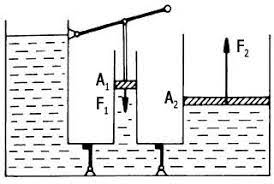F1/A1 = F2/A2
Hidrosztatikai nyomás
A hidrosztatikai nyomás nem más, mint a folyadék súlyából származó nyomás.
Jele: p
Képlet: p = F/A = m * a/A
Mértékegység: N/m
Archimédesz törvénye
Ke. 2. század - ógörög matematikus, fizikus és filozófus
Minden folyadékba merülő testre felhajtóerő hat, amely az általa kiszorított
folyadék súlyával egyenlő nagyságú, de ellentétes irányú.
A test sűrűsége alapján három esetet különböztetünk meg:
ㅤ-ha a test sűrűsége nagyobb, mint a folyadéké akkor a test elmerül
ㅤ-ha a test sűrűsége megegyezik a folyadékkal, akkor a test lebeg a vízben
ㅤ-ha a test sűrűsége kissebb, mint a folyadéké akkor a test úszik a folyadékon
Úszás esetén a felhajtóerő pont ugyanakkora, mint a test súlya levegőn.
Jele: F
Képlet: Ffel = G → Vtest * ρfoly * q
Mértékegység: N
Atmoszdférikus nyomás(légnyomás)
A levegő súlyátúl származó nyomást atmoszférikus nyomásnak nevezzük.
17. század - olasz fizikus Torricelli mérte meg először a légnyomást.
1 m hosszú csövek egyik vége be volt forrasztva, a másik része nyitva volt.
Teletöltötte higannyal, majd a nyitott szájával egy higanytálba tette.
1atm = 760 Hgmm
1atm ≈ 1 bar ≈ 100 000 Pa
Kiszámítható, hogy az atmoszférikus nyomás 10 m-es vízoszlop nyomásával egyenlő.
Kiszámítható, hogy a vízben a hidrosztatikus nyomás méterenként 10 kPa-lal nő.
Hasonlóképpen kiszámolható, hogy kis magasságokban 100 méterenként 11 hPa-lal csökken a légnyomás.
11 hPa = 1100 Pa
5500 m magasan a legnyomás a fele a tengerszintinek (50 000 Pa).
A fülben a dobhártya nyomáskülönbség hatására kétféleképpen sérülhet:
ㅤ-beszakad (nyomás növekedés)
ㅤ-kiszakad (nyomás csökkenés)
Légnyomáson alapuló berendezések
Laboratóriumokban higanyos légnyomásmérőt használnak.
Légnyomás mérésére használják még az aneroidát is.
Meteorológiai állomásokon légnyomás mérésére barográfot használnak.
A vérnyomásmérők is nyomáskülönbségen alapulnak.
A kart körülvevő párnát addig kell levegővel pumpálni amíg a vér keringése a karban megszűnik.
Ekkor leolvassák a levegő nyomását és az egyenlő a vér nyomásával.
A föld légkörének felhajtóereje
Archimédesz törvénye nem csak folyadékokra de gázokra is érvényes.
Ennek hatására emelkedik a léghajó / léggömb.
Gázoknál a felhajtóeerő egyenlő a test által kiszorított gáz súlyával.
Jele: F
Képlet: Ffelhajtóerő = Vtest * ρgáz * q
Mértékegység: N
ρgáz = ρlevegő = 1,29 kg/m2
Ha a test súlya:
ㅤ-kisebb a felhajtóerőnél, akkor a test felemelkedik
ㅤ-egyenlő a felhajtóerővel, akkor a test lebeg
ㅤ-nagyobb a felhajtóerőnél, akkor a test lesüllyed
A leggömböket a levegőnél könnyebb gázzal töltik (H, He).
A vákumban a testekre felhajtóerő nem hat.
Áramló közeg mechanikája
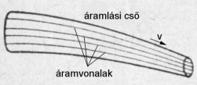A folytonossági (kontinuitási) egyenlet
Ha a keresztmetszet csökken, akkor az áramlás sebessége növekszik.
Ez azt jelenti, hogy A1 * v1 = A2 * v2
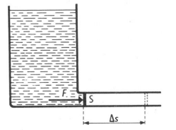
Nyomási energia
A nyomással rendelkező víz munkát végez, szóval energiája van.
Ezt az energiát nyomási energiának nevezzük.
A végzett munkát a folyadék nyomásának és a csőben áramló folyadék terfogat
változásának szorzata adja.
Jele: W
Képlet: W = F * s
ㅤㅤㅤW = p * V
Bernoulli egyenlete
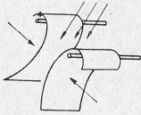18. század - svájci matematikus, fizikus
Az áramló folyadék sebessége és nyomása közti összefüggést állapította meg.
Azt állapította meg, hogy ha növekszik a sebesség akkor a nyomás csökken.
Ezt nevezzük hidrodinamikai vagy aerodinamikai paradoxonnak.
Befúváskor megnövekszik a levegőáram sebessége, így lecsökken a nyomás.
A külső nyomás azonban változatlan marad (a bentinél nagyobb), ezért összenyomja a két papírlapot.
A közegellenállás
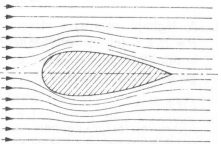Közegellenállásnak nevezzük azt az erőt, amely a test és az áramló közeg kölcsönhatásából származik.
A repülés elve
A repülőgép szárnya asszimetrikus. Ennek következtében a szárny felett áramló levegősebessége nő → a nyomás csökken. A szárny alatt a nyomás marad. Akkor repül, ha a
felhajtóerő nagyobb, mint a gép súlya.
Bernoulli törvénye az adott közegben mért hangsebességhez közeli, vagy azt meghaladó
sebességeknél érvényét veszti.
Az elektromos tér
Alapfogalmak
Ha egy műanyag vonalzót gyapjúdarabbal dörzsölünk, feltöltődik és magához
vonzza a papírszeleteket.
Fésülködéskor a fésű vonzza a száraz hajszálakat.
Minden atom magja pozitív töltésű protonokból és töltés nélküli neutronokból
áll. Az atommagot körülvevő elektronburokban negatív töltésű elektronok találhatók.
Normális körülmények között a protonok száma egyenlő az elektronok
számával – az atom kifelé semleges.
Elektron – görög szó, jelentése borostyánkő
Elektrontöbblet – negatív töltés (negatív ion)
Elektronhiány – pozitív töltés (pozitív ion)
Ion – elektromos töltéssel rendelkező részecske
pl: konyhasó
ㅤNa+Cl-
ㅤ↑ㅤㅤ↑
pozitívㅤnegatív
Az elemi töltés a természetben előforduló legkisebb töltés.
Protonnál pozitív, elektronnál negatív.
ㅤ𝒆 = 1,6 · 10-19 C
ㅤ↑ㅤㅤㅤㅤㅤㅤ↑
elemiㅤㅤㅤㅤㅤㅤCoulumb
töltésㅤㅤㅤㅤㅤtöltés egysége
Coulomb - 18. század - francia fizikus
Róla nevezték el az elektromos töltés egységét.
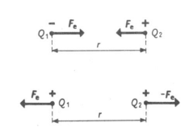
Felektromos = k * Q1 * Q2
ㅤㅤㅤㅤ ㅤㅤ ㅤr2
F = erő (N)
k = állandóㅤㅤérték = 9 * 109 Nm2C-2
Q = töltés (C - Coulomb)
r = távolság (m)
A Coulomb törvény kimondja, hogy egymástól bizonyos távolságra elhelyezett két
töltés között mekkora lesz a vonzó illetve taszitó erő.
Elektromos térerősség
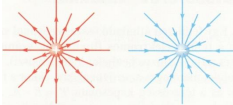Az elektromos térerősség, vagy másnéven intenzitás az elektromos erő és a
töltés hányadosaként definiálható.
E = F =k * Q
ㅤ Q ㅤ r2
E = térerősség (N/C)
F = erő (N)
Q = töltés (C)
k = állandóㅤㅤérték = 9 * 109 Nm2C-2
r = távolság (m)
Az erő vektormennyiség. Van nagysága és iránya, ezért az elektromos térerő is
vektormennyiség. Megállapodás szerint a pozitív töltésnél az elektromos
térerősség kifelé mutat, negatív töltésnél befelé mutat.
Elektromos tér

Az elektromos tér elektromos erővel mozgatja az elektronokat egy bizonyos
úton. Ekkor az elektromos tér munkát végez.
Az elektromos munka az erő és az elmozdulás szorzata.
W = E * Q * d
W = munka (J - joule)
E = térerősség (N/C)
Q = töltés (C)
d = távolság (m)
Elektromos munkánál "s" helyett "d"-t írunk.
Elektromos potenciál
Volta - 18. század - olasz fizikus
Az elektromos potenciál az elektromos energia és a töltés hányadosa.
φe = W = Q * E * d = E * d
ㅤ ㅤQㅤㅤㅤQ
W = munka (J)
φ = térerősség (N/C)
Q = töltés (C)
d = távolság (m)
Elektromos feszültség
Az elektromos feszültség nem más mint potenciál különbség.
U = E * d
U = feszültség (V - volt)
E = térerősség (N/C)
d = távolság (m)
Millikan kísérlete
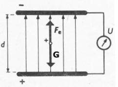Millikan - 20. század - amerikai fizikus
2 vízszintes lap köré olajcseppet helyezett. A lapok között elektromos tér volt.
Az olajcsepp a levegőből pozitív töltést vett fel és a lapok között akkor volt
egyensúlyban, amikor az elektromos erő és a gravitációs erő egyenlő volt.
Olajcsepp akkor lesz egyensúlyban, ha
ㅤㅤㅤFelektromos = Fgravitációs
ㅤㅤㅤㅤㅤE * Q = m * g
ㅤ ㅤ ㅤ ㅤQ * U = m * g
ㅤㅤㅤ ㅤ ㅤㅤd
ㅤㅤ ㅤ ㅤㅤㅤQ = m * g * d
ㅤㅤ ㅤ ㅤㅤㅤㅤ ㅤ ㅤU
Q = töltés (C)
m = tömeg (kg)
g = gravitáció (N/kg)
d = távolság (m)
U = feszültség (V)
Ezzel a kísérlettel azt állapította meg, hogy az elektromos töltések nagysága nem
folytonos, hanem csak bizonyos értékeket vehet fel, méghozzá az elemi töltés egész számú többszöröseit.
1 = 1,6 * 10-19C
2 * 1,6 * 10-19C
3 * 1,6 * 10-19C
Az olajcsepp egyensúlya csak a feszültség érékétől függött és ebből jött rá, hogy
egész számú többszörösként fordul elő az elemi töltés.
Kapacitás
Faraday - 19. század - angol fizikus
A kapacitás azt határozza meg, hogy egy testet mennyire sikerült töltéssel feltöltenünk.
Mivel az 1C töltés kb. 1019db elektron töltésnek felel meg, ezért az F kisebb értékét használjuk.
mF = 10-3F
uF = 10-6F
nF = 10-9F
pF = 10-12F
C = Q
ㅤ U
C = kapacitás (F - farad)
Q = töltés (C)
U = feszültség (V)
Kondenzátorok
Két egymástól szigetelővel ellátott fémlemezt kondenzátornak nevezzük.
A szigetelőanyag lehet papír, olaj, kerámia, levegő. A kondenzátor a töltések tárolására szolgál,
például a fényképezőgép vakuja, amely először feltöltődik, majd az összegyűlt enegiát fény formájában adja ki.
A kondenzátorok légegyszerűbb fajtája a lemezes kondenzátor.
A lemezes kondenzátor kapacitása függ a lemezek felületétől,
a köztük lévő távolságtól és a szigetelétől.
C
C = 𝜺o * A
ㅤㅤㅤd
C = kapacitás (F)
𝜺 = epszilon ㅤㅤérték = 8,856*10-12
A = felület (m2)
d = távolság (m)
Kondenzátorok energiája
A feltöltött kondenzátor energiája függ a kapacitástól és a feszültség négyzetétől.
E = 0.5 * C * U2
E = energia (J)
C = kapacitás (F)
U = feszültség (V)
Kondenzátorok kapcsolása
A kondenzátorokat két féle képpen kapcsolhatjuk. Sorosan és párhuzamosan.
PÁRHUZAMOS
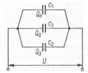
Párhuzamos kapcsolás esetén az eredő kapacitás az egyes kapacitások összege.
C1 = 1nF
C2 = 2nF
C3 = 40nF
Ceredő = C1 + C2 + C3
Ceredő = 1nF + 2nF + 40nF = 43nF
SOROS
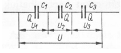
Soros kapcsolásnál az eredő kapacitás reciproka egyenlő az
egyes kapacitások reciprokainak összegével.
1 ㅤ=ㅤ 1 + 1 + 1
Ceredő C1 C2 C3
1 ㅤ=ㅤ 1 ㅤ+ㅤ 1 ㅤ+ㅤ 1 ㅤ=ㅤ40 + 20 + 1ㅤ=ㅤ 61
Ceredő 1nF ㅤ 2nF ㅤ 40nFㅤㅤㅤㅤ40nFㅤ ㅤㅤㅤ41
1 ㅤ=ㅤ 40 ㅤ= 0,6557nF
Ceredő 61nF
C = kapacitás (F)
Vezetők és szigetelők
Az anyagok elektromos szempontból 2 csoportba oszthatók:
ㅤ-vezetők
ㅤ-szigetelők
Azok az anyagok amelyek töltéshordozókat tartalmaznak (elektronokat vagy ionokat) elektromos vezetőnek nevezzük.
ㅤ- a fémek (pl.: alumínium, réz, vas) szabad elektronokat tartalmaznak és ezek
ㅤㅤmozgása hozza létre az elektromos áramot
ㅤ- a folyadékokban a pozitív és negatív ionok mozgása hozza létre az elektromos
ㅤㅤáramot (pl.: sós víz)
ㅤ- gázokban (pl.: villámlás) az áramot az ionok és elektronok hozzák létre
Másik csoportba tartoznak az elektromos szigetelőanyagok (pl.: üveg, porcelán, fa, műanyagok)
ezekben az anyagokban minimális mozgásképes töltéshordozók vannak vagy nincsenek.
A szelén, a germánium és a szilícium félvezetők, ezért a vezetők és szigetelők között vannak.
Az elektromos áram keletkezése
Egyenáram
Ha egy zseblámpa elem két végéhez izzólámpát kapcsolunk, akkor a lámpa világít. Ennek az az
oka, hogy a töltéshordozók rendezett irányú mozgást végeznek. Az elektronok mindig a negatív
pólustól a pozitív pólus felé mozognak, de megállapodás alapján fordítva jelöljük.
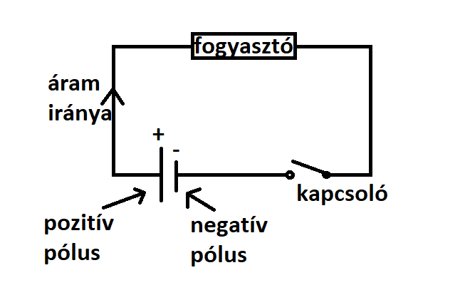
Az áramerősség
Az áramerősség nem más, mint időegység alatt áthaladó töltések száma.
I = Q
ㅤ t
I = áram (A - amper)
Q = töltés (C)
t = idő (s)
Ohm törvénye
Ohm - 18-19. század - német fizikus
Kísérletileg igazolta, hogy a feszültség az árammal egyenesen arányos.
Mindig a feszültség hozza létre az áramot, nem pedig fordítva.
U ~ I
~ = egyenesen arányos
U = R * I
U = feszültség (V)
I = áram (A)
R = ellenállás (Ω - Ohm)
Az U=R*I kápletben az R-t elektromos ellenállásnak nevezzük.
1 Ohm a vezető ellenállása akkor, ha 1 V feszültség 1 A áramot hoz létre.
Az elektromos ellenállás azt határozza meg, hogy feszültség hatására a töltéshordozók
redezett mozgását a vezető belső anyagszerkezete hogyan fékezi.
Ezt a folyamatot rezisztenciának nevezzük.
Minden fogyasztó, illetve vezető ohmos ellenállásnak tekinthető.
R = ρ * l
ㅤㅤ ㅤA
ρ = fajlagos ellenállás (Ωmm/m)
l = vezeték hossza (m)
A = vezeték keresztmetszete (mm2)
R = ellenállás (Ω)
Az elektromos ellenállás a fémhuzal anyagi minőségétől és méretétől függ.
R = R0(1 + a * Δt)
R = t hőmérséklete mint ellenállás (Ω)
R0 = t0 hőmérséklete mint ellenállás (Ω)
Δt = hőmérséklet
a = hőtágulási együttható (°C-1)
Az ellenállások kapcsolása
SOROS
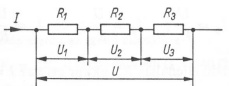
Eredő ellenállás
Reredő = R1 + R2 + R3
I = U
ㅤ Reredő
U = U1 * U2 * U3
U1 = R1 * I
U2 = R2 * I
U3 = R3 * I
PÁRHUZAMOS
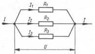
Eredő ellenállás
1 = 1 + 1 + 1
Reredő R1 R2 R3
U = Reredő * I
I = I1 + I2 + I3
I1 = U
ㅤㅤR1
I2 = U
ㅤㅤR2
I3 = U
ㅤㅤR3
U = feszültség (V)
I = áram (A)
R = ellenállás (Ω - Ohm)
Mérőműszerek kapcsolása
Az áramerősség mérésére ampmérőt használunk. Az ampmérő az áramkörbe mindig SOROSAN kötjük be a fogyasztóhoz képest.
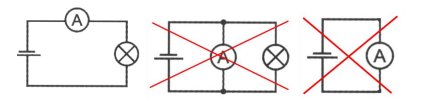
A feszültség mérésére voltmérőt használunk. A voltmérőt mindig PÁRHUZAMOSAN kapcsoljuk be a fogyasztóhoz képest.
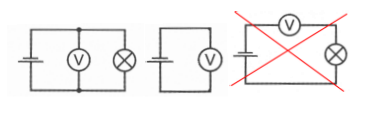
Elektromos munkavégzés és teljesítmény
Az elektromos munkát úgy számítjuk ki, hogy a feszültséget, az áramot és az időt összehasonlítjuk.W = U * I * t
W = elktromos munka (J)
U = feszültség (V)
I = áram (A)
t = idő (s)
Ohm törvénye alapján különböző képletek írhatóak fel.
ㅤU = R * I
ㅤW = U * I * t = R * I * I * t = R * I2 * t
ㅤW = R * I2 * t
ㅤI = U
ㅤㅤ R
ㅤW = U * I * t = U * U * t = U2 * t
ㅤㅤㅤㅤㅤㅤㅤㅤㅤ Rㅤㅤㅤ R
ㅤW = U2 * t
ㅤㅤㅤ R
A teljesítményt úgy számoljuk ki, hogy a munkát elosztjuk az idővel.
p = W
ㅤㅤ t
p = teljesítmény (W)
W = munka (J)
t = idő (s)
p = U * I
p = R * I2
p = U2
ㅤㅤ R
Áram hatására a vezetők felmelegednek és amennyiben más energiaátalakító nincs
az elektromos energia hővé alakul át. Ezt Joule hővel mérjük.
elektromosㅤ=ㅤJoule
munkaㅤㅤㅤㅤㅤhő
ㅤ U * I * tㅤ=ㅤm * c * ΔT
U = feszültség (V)ㅤ ㅤm = tömeg (kg)
I = áram (A)ㅤㅤㅤㅤㅤ c = fajhő (J/kg°C)
t = idő (s)ㅤㅤㅤㅤㅤ ΔT = hőmérsékletkülönbség (°C)